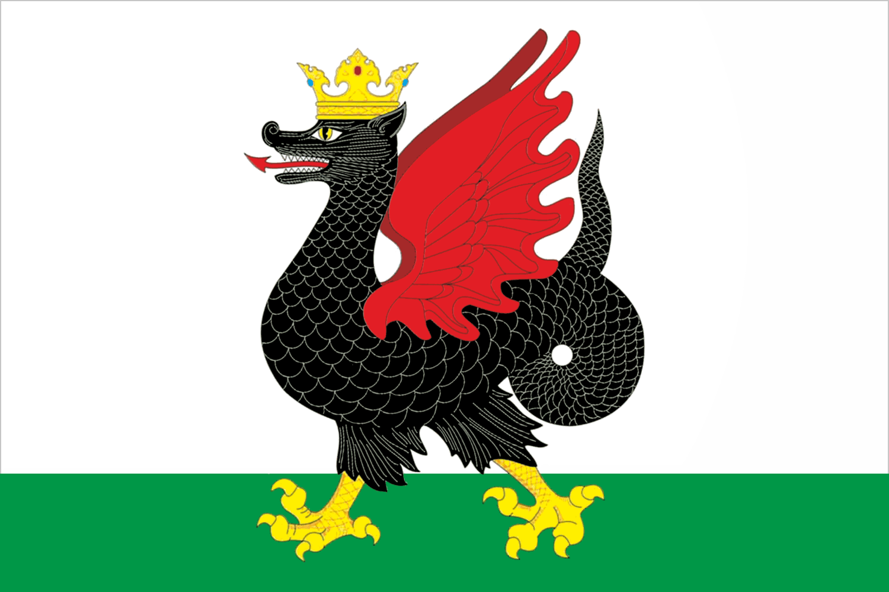

Зилант
Зилант — мифологическое существо в татарских легендах и сказках. Образ происходит от полиморфных чудовищ Средней Азии, имеет выраженные птичьи черты и родственен обакоголовому грифону. При покорении Казанского ханства московские придворные геральдисты трансформировали образ казанского существа в соответствии с русскими традициями, сделав его «казанским драконом» (в гербе Казанского царства). Позднее в русской геральдике зилант и дракон были ясно обозначены как разные персонажи с разной внешностью. В английской геральдике зилант соответствует виверне.